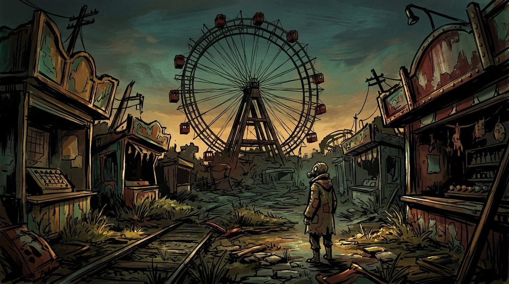

Oberwelt-Erkundung (Isometrie / Weitwinkel)
Der Wurstelprater & Das Riesenrad
Verzogene Straßenbahngleise, verwitterte Schaubuden und die monumentale Silhouette des Wiener Riesenrads im schmutzig-gelben Abendlicht. Ein Schrottsammler blickt empor in die rostigen Gondeln des Ringelspiel-Syndikats.